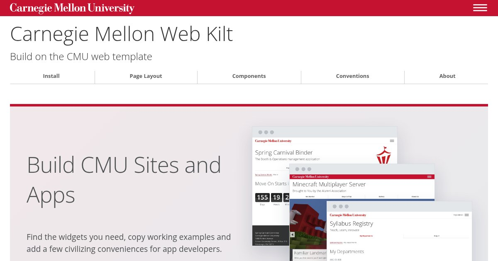

Link Previews
Give shared links a clear title, a short description and a recognizable image.
On This Page
What People See
When someone shares your page in Slack, Teams or a social post, its preview helps people decide whether to open it. The app builds that preview from information in the page's HTML.
- Title: Name the page and the site it belongs to.
- Description: Say what people will find in one short sentence.
- Image: Show the site, usually the top of its home page; see The Preview Image.
The app controls the layout, so the same link may look different in each one.
To show a preview on a page of your own, such as in a guide or a tool that checks
links, put a cmu-link-preview in a
screenshot frame: the image, then a
cmu-link-preview-text with the site, the title in
<strong> and the description.
cmu-link-preview, cmu-link-preview-text

The Preview Image
Every site should have one image for its previews. Unless a page has a better picture of its own, use the top of the site's home page:
- What it shows: The home page at 1200 pixels wide, cropped to the top 630, roof and site name included, with the menu closed and no one signed in.
- Size and type: 1200 × 630 pixels, a JPEG under 300 KB.
-
Name and place:
images/preview.jpgin the site's top folder, so it's at/images/preview.jpgon the site. For a site built from a repository, commit it there, beside the pages. - Alt text: Name the site and say what the page shows, such as “Equipment Checkout's home page: Reserve a Camera Kit, beside a photo of a camera kit.”
- Nothing private: No one's name, data or messages. Use sample data if the page shows any.
- Only what you can share without a credit: A preview shows no caption, so swap out any photo whose license asks for one.
To make it, use your browser's developer tools: most can set the page to an exact size and take a screenshot of it. Set 1200 × 630, capture the page and save it as a JPEG. Retake it when the home page changes.
Open Graph Tags Template
Open Graph tags describe the page for
apps that generate previews. Add them to the page's <head>. This
example is for an equipment reservation page:
<meta property="og:site_name" content="Equipment Checkout">
<meta property="og:title" content="Reserve a Camera Kit - Equipment Checkout">
<meta property="og:description" content="Cameras, laptops and lights, free for CMU courses.">
<meta property="og:url" content="https://www.cmu.edu/equipment/reserve.html">
<meta property="og:type" content="website">
<meta property="og:image" content="https://www.cmu.edu/equipment/images/preview.jpg">
<meta property="og:image:width" content="1200">
<meta property="og:image:height" content="630">
<meta property="og:image:alt" content="Equipment Checkout's home page: Reserve a Camera Kit, beside a photo of a camera kit.">
<meta name="twitter:card" content="summary_large_image">-
Keep the title specific: Use the page's name followed by the site's
name, as in its
<title>. -
Keep the description short: Use the same sentence as the page's
<meta name="description">. Put the useful information first; apps may shorten it. -
Use full addresses: Give both the page and image a public
https://address, not a path such as/images/preview.jpg. -
Use the preview image: The site's
images/preview.jpg, with its size and alt text. -
Request a large image:
twitter:cardwithsummary_large_imagerequests the larger preview on platforms that support Twitter Cards.
News Stories and Posts
Most pages are website: a home page, a service or help page, a form or an
app's pages. Checkers such as LinkedIn's report “No author found” and
“No publication date found” for them, which is fine: those fields are for
articles.
A page that's dated and written by someone is an article: a news story, a
blog post, an announcement or a recap of an event. Give it the type, its date and its
author, so previews can show when it was published:
<meta property="og:type" content="article">
<meta property="article:published_time" content="2027-01-11T09:00:00-05:00">
<meta property="article:modified_time" content="2027-01-12T14:30:00-05:00">
<meta property="article:author" content="Margaret Morrison">
<meta name="author" content="Margaret Morrison">-
Give the time and time zone: Write the date as above, with the
offset from UTC,
-05:00in winter and-04:00in summer. - Add the modified time only after a real change, such as a correction, not every time the page is published.
- Put them in the template for stories, such as a CMS's news or blog page type or an app's post layout, so every story gets them without anyone remembering.
In a CMS
CMU's Cascade template writes each page's title, description, address and type for you, from the page's settings; fill in the page's Description field. Don't add those tags yourself: a second copy conflicts.
Add a Picture
- Make the site's preview image.
-
Upload it to the site's
imagesfolder aspreview.jpg. -
Open the site's
setupblock, select Edit and choose the image under Social Media Image. That's the default for every page; a page with a better picture of its own can set its own Social Media Image. Cascade suggests 900 × 600, but 1200 × 630 is what the apps that build previews expect, so they don't crop it. -
Publish the site's pages, then check a preview, and look for
og:imagein a page's source.
In another CMS, check its link-preview or social-sharing settings first. Add only the tags it doesn't already provide.
In an App
An app writes every tag itself, and its previews are only as good as its layout. Put the tags in the one layout every page uses, filled in from each page, so no page goes out without them.
<!-- In the layout's <head>, from each page's own values -->
<meta name="description" content="{{ page.description }}">
<meta property="og:site_name" content="Equipment Checkout">
<meta property="og:title" content="{{ page.title }} - Equipment Checkout">
<meta property="og:description" content="{{ page.description }}">
<meta property="og:url" content="https://equipment.andrew.cmu.edu{{ page.path }}">
<meta property="og:type" content="website">
<meta property="og:image" content="https://equipment.andrew.cmu.edu/images/preview.jpg">
<meta property="og:image:width" content="1200">
<meta property="og:image:height" content="630">
<meta property="og:image:alt" content="Equipment Checkout's home page: Reserve a Camera Kit, beside a photo of a camera kit.">
<meta name="twitter:card" content="summary_large_image">- Give every page a description: Make it part of what a page must set, as a title is, and use the app's own one-sentence description as the fallback.
-
Build addresses from one setting: Keep the app's public address,
such as
https://equipment.andrew.cmu.edu, in its configuration and join each page's path to it. Don't use the address a request came in on: behind a proxy or on a test copy, it's the wrong one. -
Serve the image from the app: Put
images/preview.jpgwith its other static files, open to everyone, so it lasts as long as the app and loads without signing in. - Plan for sign-in: The apps that build previews aren't signed in. A link to a page behind sign-in shows whatever a signed-out visitor gets, usually the sign-in page, so give that page the app's own title, description and image.
- Never put a user's data in the tags: No names, course numbers or anything else from the signed-in page, even where it would be more specific.
-
Check them automatically: A test that fetches a few pages and looks
for
og:title,og:descriptionandog:imagecatches a layout that lost them. These docs write and check theirs with a script.
Check a Preview
- Check the published page, signed out: Paste its address into a message to yourself in Slack or Teams. Check the title, description and image.
- Allow time for updates: Apps cache previews, so changes may not appear immediately. Use LinkedIn's Post Inspector to check what LinkedIn sees.